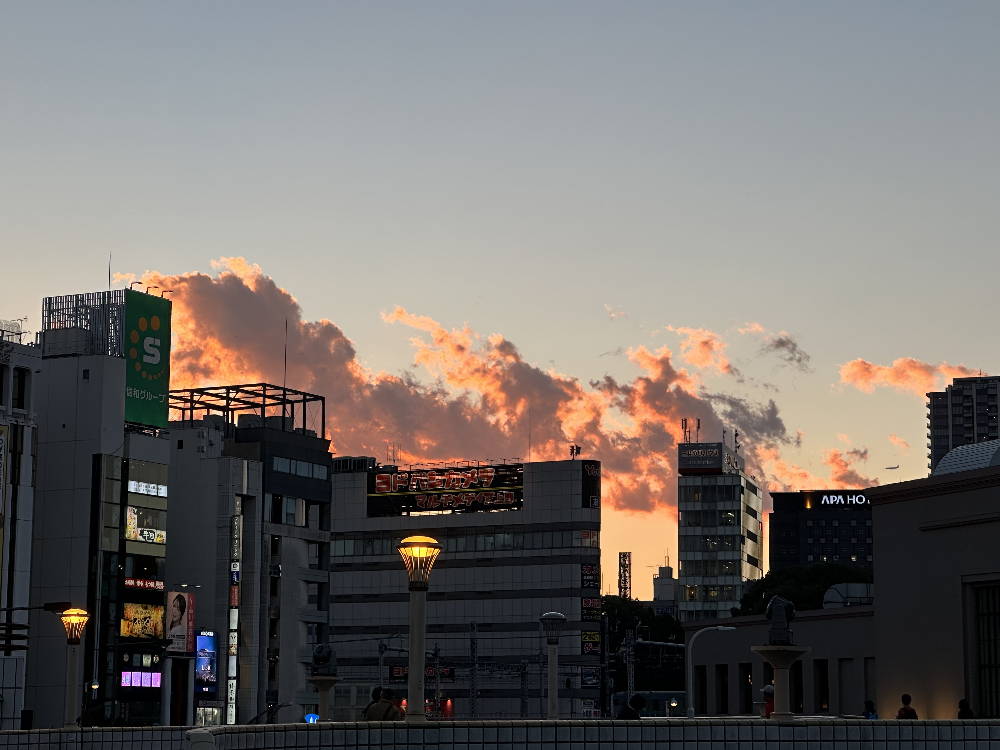
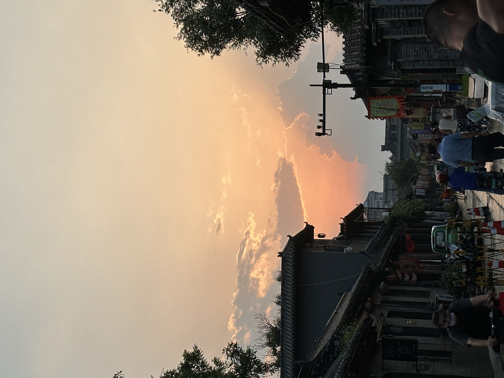
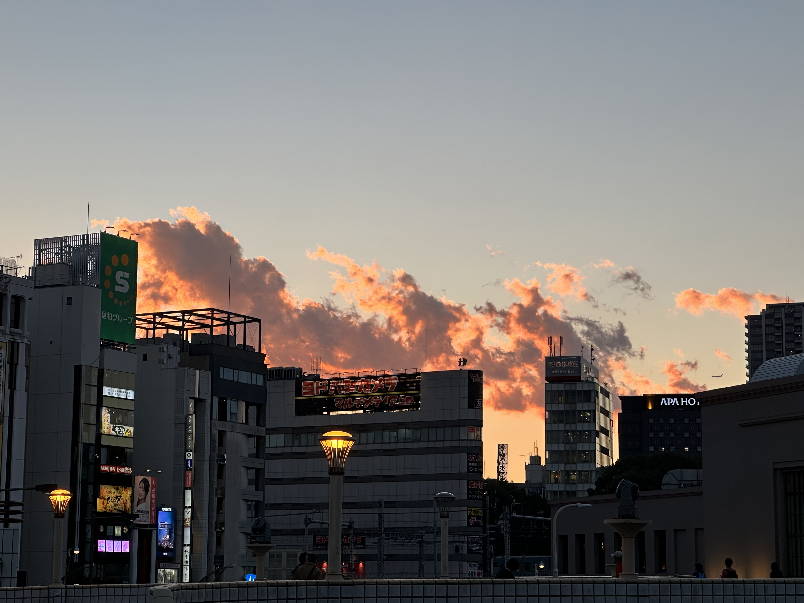
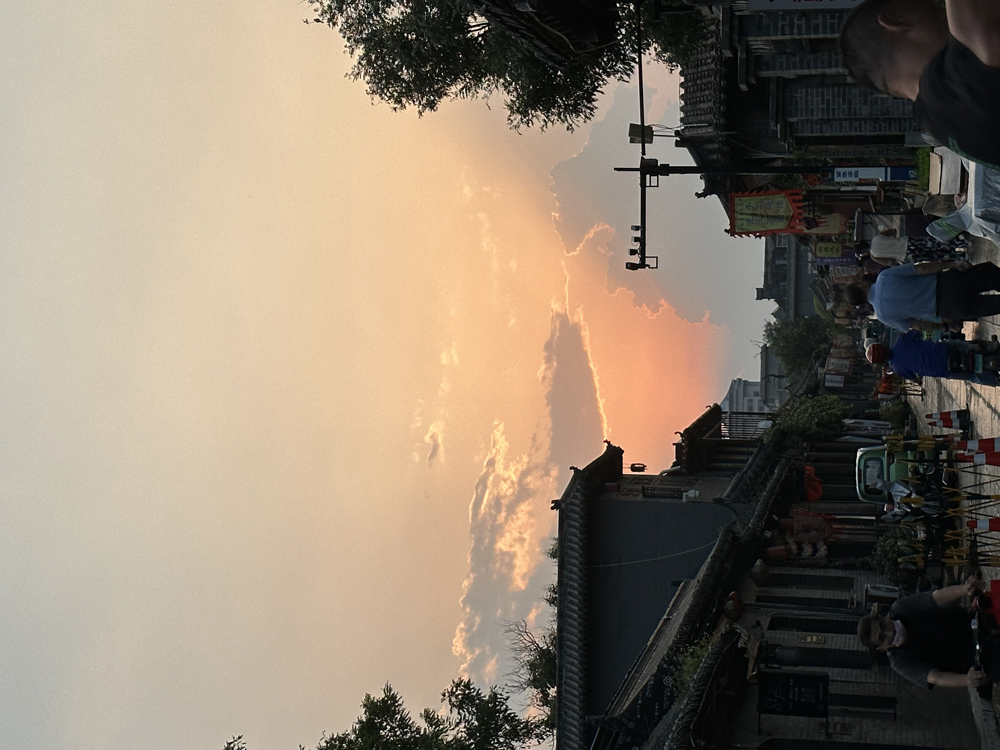
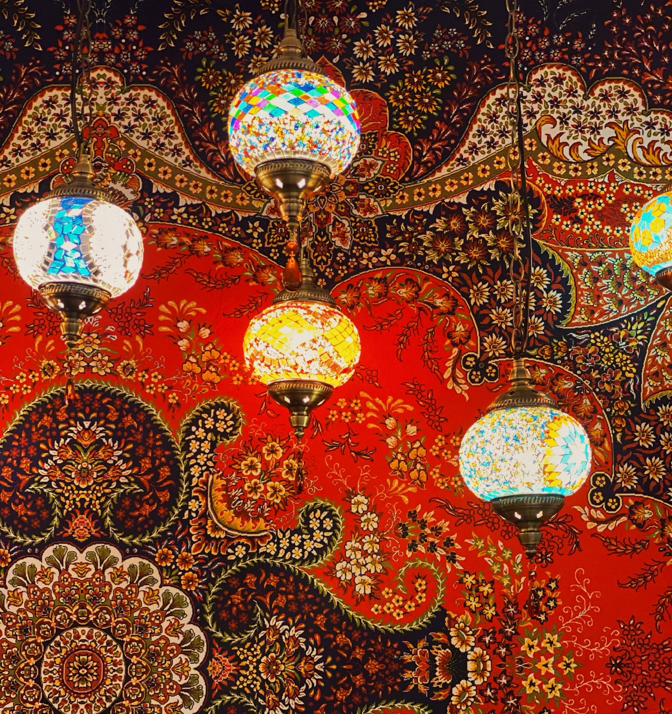
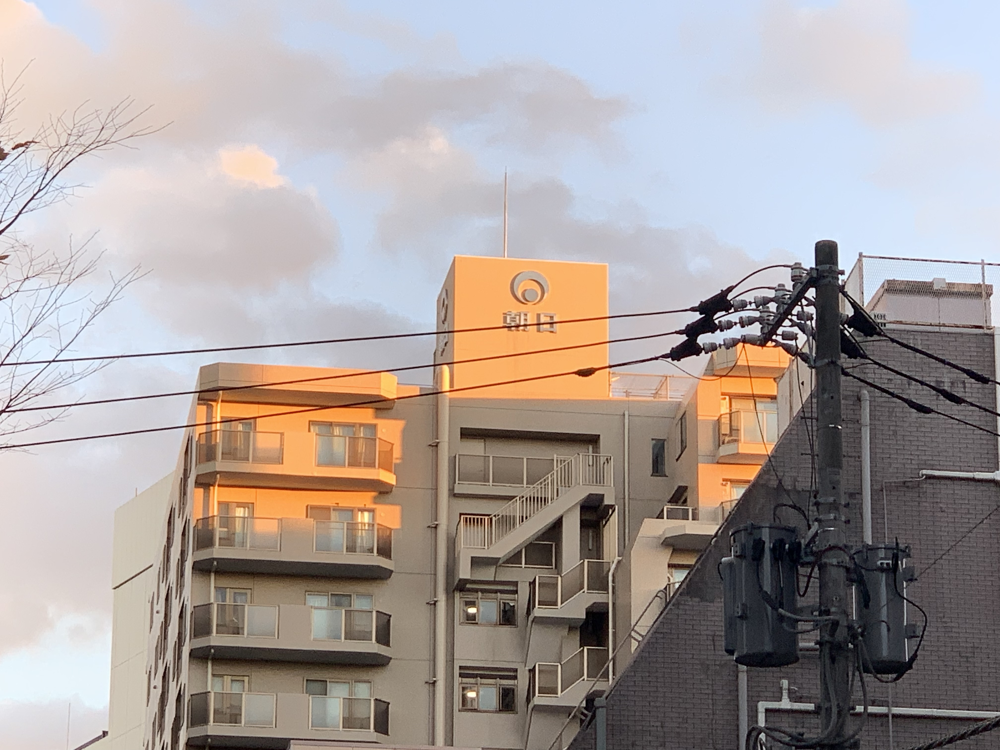
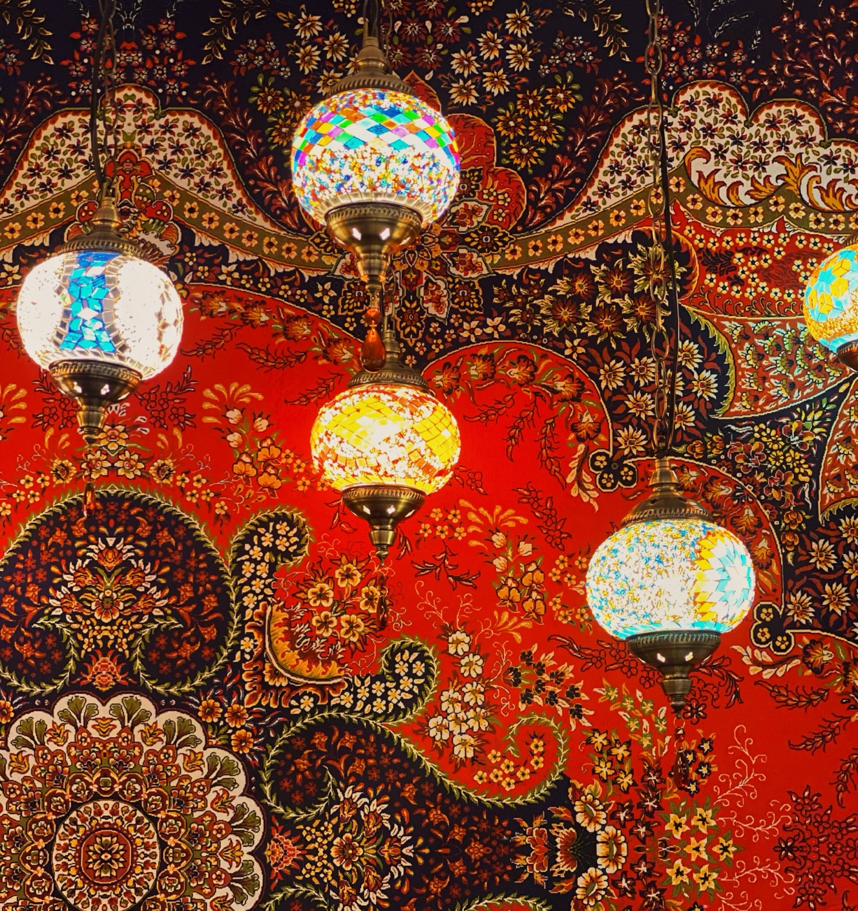
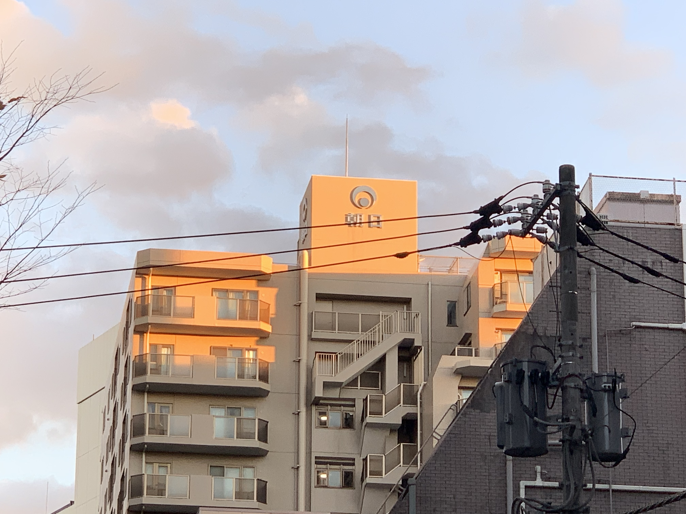

趣味 - 写真
当初は、自分の人生の断片を記録したかったからだと思っていたが、実はそうではなく、自分の人生を完成させる方法だから写真が好きなのだと気づいた。 私の人生には、写真を通して完成されたディテールがたくさんある。
私が学んだことは、写真が好きな人は多かれ少なかれ完璧を追い求め、非常に毒のある目を持っているということだ。彼らはわずかなチャンスも逃さないし、写真にあまり興味のない人よりも美しい光景を発見するチャンスが多い。たとえそれが一筋の陽光の下にある草の一片であっても、彼らは立ち止まり、そしてカメラを掲げて写真を撮るようになる。 たとえ1％の向上のために100％の代償を払わなければならないとしても、画像の質を向上させることができるのであれば、彼らはどんなことでもすることができる。
人生の良い面を掘り下げることは、少なくとも、人生には醜いものよりも良いものの方がはるかに多いということを人々に納得させることができる。だから、写真を愛しているし、これからもそうし続けるだろう。
撮った写真
 



 


